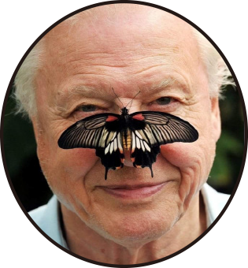
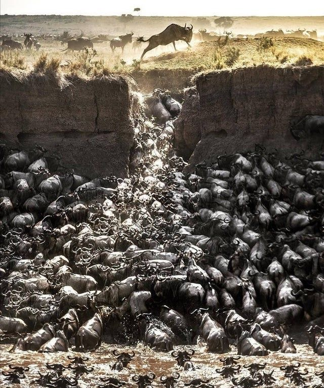
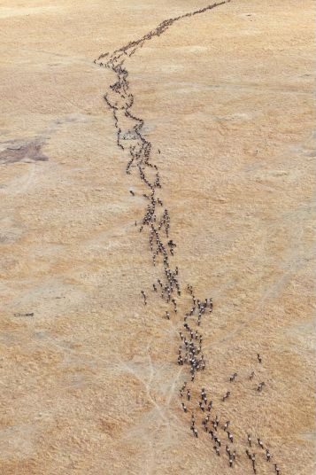

David Attenborough
@DavidALifeFilm
British broadcaster anc naturalist. "One man has seen more of the natural world than any other"
In the vast, undulating plains of the Serengeti, an extraordinary spectacle unfolds each year. Over a million wildebeest, driven by an ancient instinct, embark on a remarkable journey. This great migration, a synchronized ballet of nature, is a testament to the power of collective movement and survival.
As the rains begin to fall, the wildebeest sense the promise of fresh grasslands. They form immense herds, moving as one, driven by the need for sustenance.
This annual pilgrimage is not a random wander; it follows the well-trodden paths of generations past. Just as their ancestors did, the wildebeest adhere to these routes, seldom deviating, for within this familiarity lies the key to their survival.
But what drives this collective behavior? Within the herd, safety is paramount. By staying together, each individual reduces its risk of falling prey to the predators that lurk in the shadows. The presence of countless eyes and ears enhances their vigilance, creating a formidable barrier against the dangers that threaten them. In this vast congregation, the wildebeest find security, much like how humans find comfort in familiar, reinforcing narratives.
#HerdMigration #AttenboroughFilm #HerdMigration #AttenboroughFilm #HerdMigration #AttenboroughFilm #HerdMigration #AttenboroughFilm #HerdMigration #AttenboroughFilm #HerdMigration #AttenboroughFilm
#KPOP
#BTS
#VideoGame
#Minecraft
#GTA




Consider now the digital savannas we traverse daily. Here, algorithms curate our experiences, presenting us with content that echoes our preferences and beliefs. This digital curation creates what we call filter bubbles, where like-minded information continually reinforces our viewpoints. Just as the wildebeest follow their well-trodden paths, we too follow the algorithmically curated trails of content, seldom stepping outside our comfort zones.
Within these filter bubbles, there lies a sense of security, much like the wildebeest within their herd. The constant affirmation of our beliefs feels reassuring, reducing the cognitive dissonance that conflicting information might bring. This digital conformity mirrors the wildebeest’s instinctual drive to stay with the herd, ensuring immediate safety at the cost of broader exploration.
Yet, this very safety can lead to unforeseen consequences. In the wild, if wildebeest congregate in one area for too long, they risk overgrazing, depleting the resources essential for their survival. Similarly, within our filter bubbles, the overconsumption of homogenous content can lead to intellectual stagnation, limiting our exposure to diverse perspectives and critical thinking.
#Algorithm
#Bubbles
#Migration
The wildebeest’s migration, though fraught with peril, is a journey of survival and discovery. It is a delicate balance between the comfort of the known and the necessity of the new. As we navigate our digital landscapes, let us take a lesson from these magnificent creatures. While it is natural to seek comfort in the familiar, true growth and understanding come from venturing beyond our echo chambers, embracing the diverse and the unknown.
In this way, the story of the wildebeest becomes a poignant metaphor for our own digital existence. Their journey reminds us of the importance of balance, of the need to step beyond the algorithmically curated paths, and to seek out the richness of a world that lies just beyond our digital herds.